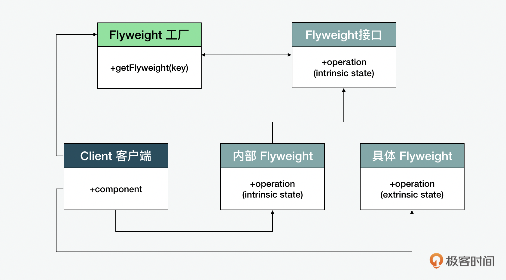
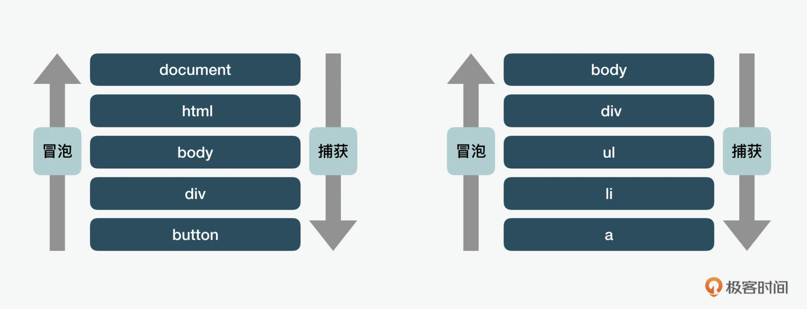
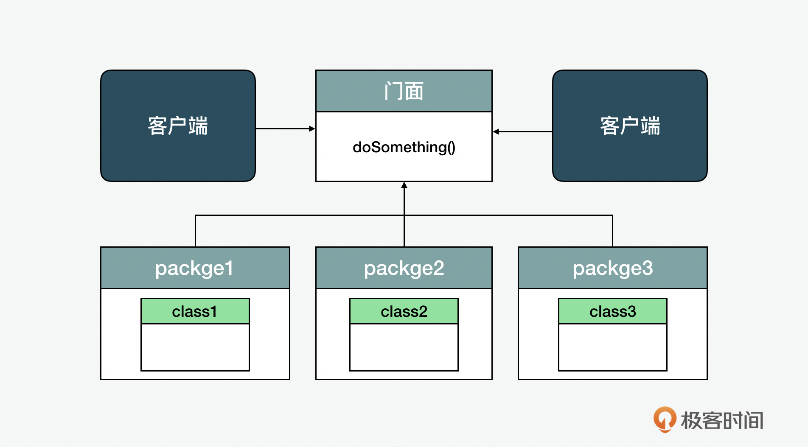
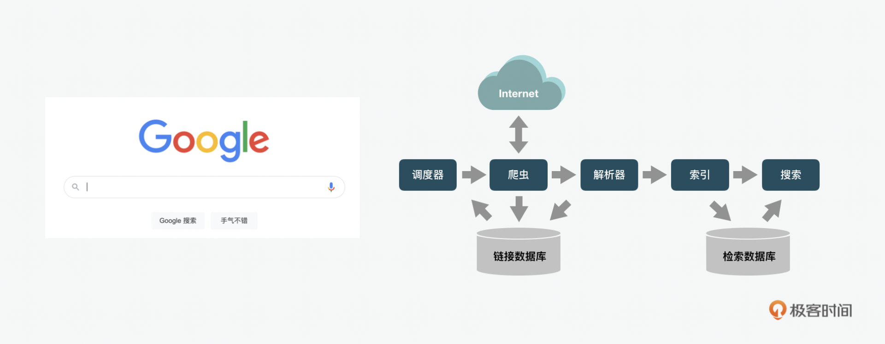
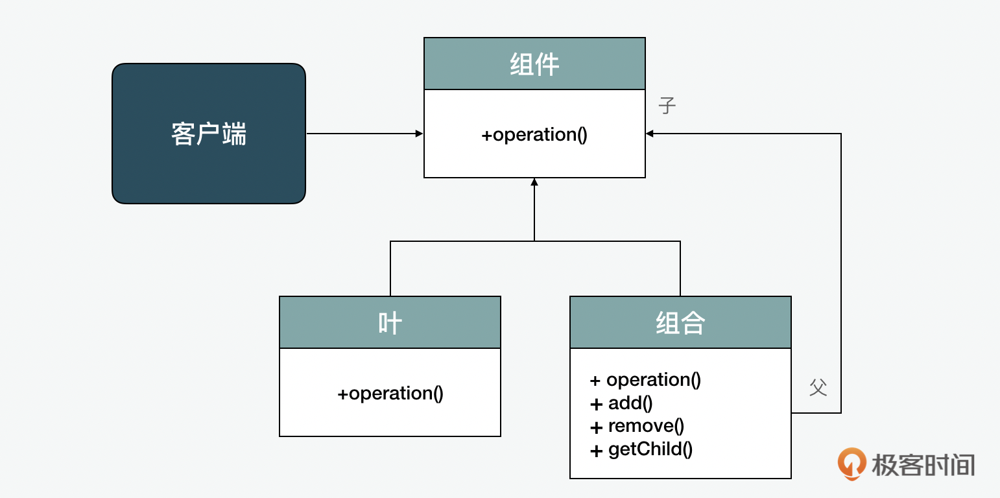
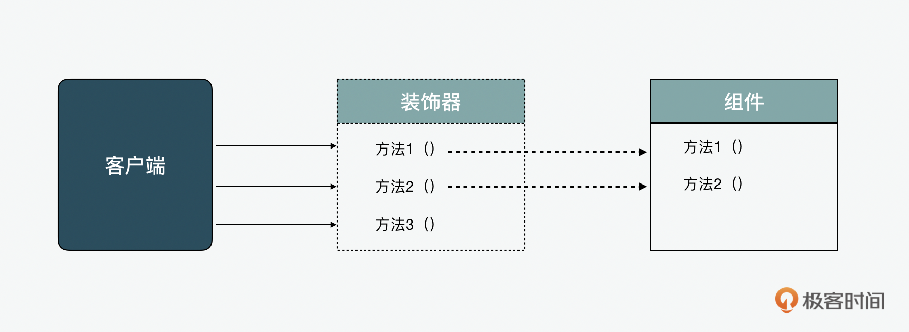
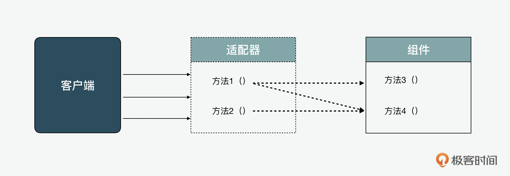

- 00 开篇词 JavaScript的进阶之路.md.html
- 01 函数式vs.面向对象：响应未知和不确定.md.html
- 02 如何通过闭包对象管理程序中状态的变化？.md.html
- 03 如何通过部分应用和柯里化让函数具象化？.md.html
- 04 如何通过组合、管道和reducer让函数抽象化？.md.html
- 05 map、reduce和monad如何围绕值进行操作？.md.html
- 06 如何通过模块化、异步和观察做到动态加载？.md.html
- 07 深入理解对象的私有和静态属性.md.html
- 08 深入理解继承、Delegation和组合.md.html
- 09 面向对象：通过词法作用域和调用点理解this绑定.md.html
- 10 JS有哪8种数据类型，你需要注意什么？.md.html
- 11 通过JS引擎的堆栈了解闭包原理.md.html
- 12 JS语义分析该用迭代还是递归？.md.html
- 13 JS引擎如何实现数组的稳定排序？.md.html
- 14 通过SparkPlug深入了解调用栈.md.html
- 15 如何通过哈希查找JS对象内存地址？.md.html
- 16 为什么环形队列适合做Node数据流缓存？.md.html
- 17 如何通过链表做LRU_LFU缓存？.md.html
- 18 TurboFan如何用图做JS编译优化？.md.html
- 19 通过树和图看如何在无序中找到路径和秩序.md.html
- 20 算法思想：JS中分治、贪心、回溯和动态规划.md.html
- 21 创建型：为什么说Redux可以替代单例状态管理.md.html
- 22 结构型：Vue.js如何通过代理实现响应式编程.md.html
- 23 结构型：通过jQuery看结构型模式.md.html
- 24 行为型：通过观察者、迭代器模式看JS异步回调.md.html
- 25 行为型：模版、策略和状态模式有什么区别？.md.html
- 26 特殊型：前端有哪些处理加载和渲染的特殊“模式”？.md.html
- 27 性能：如何理解JavaScript中的并行、并发？（上）.md.html
- 28 性能：如何理解JavaScript中的并行、并发？（下）.md.html
- 29 性能：通过Orinoco、Jank Busters看垃圾回收.md.html
- 30 网络：从HTTP_1到HTTP_3，你都需要了解什么？.md.html
- 31 安全：JS代码和程序都需要注意哪些安全问题？.md.html
- 32 测试（一）：开发到重构中的测试.md.html
- 33 测试（二）：功能性测试.md.html
- 34 测试（三）：非功能性测试.md.html
- 35 静态类型检查：ESLint语法规则和代码风格的检查.md.html
- 36 Flow：通过Flow类看JS的类型检查.md.html
- 37 包管理和分发：通过NPM做包的管理和分发.md.html
- 38 编译和打包：通过Webpack、Babel做编译和打包.md.html
- 39 语法扩展：通过JSX来做语法扩展.md.html
- 40 Polyfill：通过Polyfill让浏览器提供原生支持.md.html
- 41 微前端：从MVC贫血模式到DDD充血模式.md.html
- 42 大前端：通过一云多端搭建跨PC_移动的平台应用.md.html
- 43 元编程：通过Proxies和Reflect赋能元编程.md.html
- 结束语 JavaScript的未来之路：源于一个以终为始的初心.md.html
- 捐赠
23 结构型：通过jQuery看结构型模式
你好，我是石川。
今天，我带你顺着上一节的内容，再来看看在GoF（四人组）的《设计模式：可复用面向对象软件的基础》这本书中介绍的另外几种经典的结构型设计模式。我们可以通过jQuery来看看结构型的设计，说到这里，你可能会说jQuery可以算是被吐槽比较多的一个框架了，它有什么参考价值呢？但是我认为用户是用脚投票的，虽然很多人在骂着jQuery，但是同时也在用着。这也证明了它从开发上提供给人们的便捷，作为优点要大于它的缺点。其实，它的很多让人们“恨不释手”的设计背后都能看到结构型的设计模式。今天，我们就一起来看看吧。
几种经典的结构型模式
我们先来看看几种经典的结构型模式。分别是享元、门面和组合模式。
享元模式（flyweight）
享元模式（flyweight）的核心思想是通过减少对象的创建数量来节约内存。
享元模式最早是保罗·考尔德和马克·林顿在 1990 年提出的。喜欢看拳击的朋友可能知道享元的英文单词flyweight，其实是拳击里面的一个重量等级，叫做“特轻量”，也就是重量低于112磅的拳手。我们来看一个UFC比赛画面，一个重量级（heavy weight）和特轻量级 （flyweight）的选手放在一起对比，感受就更直观了。所以顾名思义，该模式旨在帮助我们实现轻量级的内存占用。
那么它是怎么减少对象的创建数量来节约内存的呢？这里的实现主要通过优化重复、缓慢且低效地共享数据的代码，与相关对象（例如应用程序配置、状态等）共享尽可能多的数据来做到最大限度地减少应用程序中内存的使用。在享元模式下，有3个核心概念：享元工厂、接口和具体享元。它们的关系如下图所示。

在享元模式中有两种数据 ，内在数据（intrinic）和外在数据（extrinsic）。 内在数据是在对象内部存储和调用的， 外部信息则是存储在外部的可被删除的数据。具有相同内在数据的对象可以由工厂方法创建单个共享对象。
享元接口（flyweight interface）可以接收和作用于外部状态。具体享元（concrete flyweight）是接口的实际实现，它负责存储可分享的内在状态，并且可以控制外部状态。享元工厂（flyweight factory）负责管理和创建享元对象。在客户端发起对享元对像的请求时，如果对象已经存在，就返回对象；如果尚未存在，则创建一个相关对象。
我们用一个租车的例子来解释，在租车行里，同一款车（car）可能有好几辆，这几款车的车型（model）、制造商（maker）、识别码（vin） 都是一样的，那我们可以说这些就是内在数据，可以通过单个共享对象 cars 存储。但是每个车目前出租的状态（availability）、租金 （sales） 是不同的，这些我们就可以作为外在数据存储。当通过 addCar 加进来新车时，createCar 可以判断是创建新的车型，还是基于vin返回已有的车型就可以了。所以下面我们虽然创建了5条车辆记录，但只有3个车型的实例。
// 储存车型的独立对象
class Car {
constructor(model, maker, vin) {
this.model = model;
this.maker = maker;
this.vin = vin;
}
}
// 储存具体车型对象的容器
var cars = new Map();
// 如果车型已知，就返回vin；未知就创建
var createCar = (model, maker, isbn) => {
var existingCar = cars.has(vin);
if (existingCar) {
return cars.get(vin);
}
var car = new Car(model, maker, vin);
cars.set(vin, car);
return car;
};
// 存储租赁车的容器
var carList = [];
// 登记租赁车到列表
var addCar = (model, maker, vin, availability, sales) => {
var car = {
...createCar(model, maker, vin),
sales,
availability,
vin
};
carList.push(car);
return car;
};
addCar("911", "Porsche", "FR345", true, 2300);
addCar("911", "Porsche", "FR345", false, 2400);
addCar("Togun", "VW", "AZ567", false, 800);
addCar("C-Class", "Mercedes-Benz", "AS356", false, 1200);
addCar("C-Class", "Mercedes-Benz", "AS356", true, 1100);
随着硬件的发展，现在的内存RAM的大小基本都是GB级别的了，所以享元模式现如今已经不是那么重要了。但是如果创建的对象数量特别巨大，即使微小的差别也可能在规模化的过程中变得明显，因此这种设计模式我们依然需要关注。
上面我们举的例子是从数据角度的享元。下面，我们也可以从从另外一个事件处理的角度看看享元模式的应用。因为DOM（文档对象模型）是层层嵌套的，所以一个单一的，比如点击事件，可能会被多个DOM层级中的事件处理程序处理。DOM支持两种对象事件监听的方法，一种是自顶向下的事件捕获，一种是自底向上的事件冒泡。在事件捕获中，事件首先被最外层的元素捕获并传播到最内层的元素。 在事件冒泡中，事件被捕获并提供给最内部的元素，然后传播到外部元素。

在利用冒泡的场景里，基于它是自底向上的事件冒泡在最底层的元素，执行事件处理程序的，假设我们在文档中有许多相似的元素，当用户对它们执行操作的时候，比如点击或鼠标经过时，这些元素都会做出相似的行为反应。通常我们在构建菜单或其他基于列表的小部件时，所做的是将点击事件绑定到容器中的每个链接元素上，比如 $(‘ul li a’).on(…)。但如果用的是享元模式呢，我们可以将一个享元加到元素外部的容器上，自上而下地侦听来自下方的事件，然后根据需要使用相应逻辑来处理这些事件。而不是像冒泡那样，将点击绑定到多个元素。
下面的例子是用享元构建一个非常基本的accordion。在这里，jQuery用于将初始点击绑定到container div上，把许多独立的行为转化为共享的行为。
var stateManager = {
flyweight() {
var self = this;
$('#container')
.unbind()
.on('click', 'div.toggle', ({
target
}) => {
self.handleClick(target);
});
}
};
Facebook的詹姆斯·帕德奥尔西（James Padolsey）提出过另外一个jQuery中用到享元的概念。他说到在用jQuery的一些工具方法时，最好使用内部的jQuery.methodName底层方法，例如jQuery.text；而不是用对外暴露的jQuery.fn.methodName外部方法，例如jQuery.fn.text。jQuery.methodName是jQuery库本身在内部用来支持 jQuery.fn.methodName的底层方法。使用它，也就是等于在函数方法调用时，减少一层抽象或避免创建新的jQuery对象。因此詹姆斯提出了一个jQuery.single的想法，每次调用jQuery.single ，意味着多个对象的数据被整合到一个中心化共享的数据结构中，所以它也算是一种享元。
jQuery.single = (o => {
var collection = jQuery([1]);
return element => {
// Give collection the element:
collection[0] = element;
// Return the collection:
return collection;
};
})();
$('div').on('click', function() {
var html = jQuery
.single(this)
.next()
.html();
console.log(html);
});
门面模式（facade）
门面模式（facade）是一种经常可以在jQuery等JavaScript库中看到的结构，它的特点是把很多的解决复杂的兼容性问题的实现隐藏在背后，只通过“门面”将对外的接口抽象提供给使用者。

打个比方，我们平时用的搜索引擎可以说是“门面”，它的界面和操作简单的不能再简单。但是背后的实现逻辑是非常复杂的，这里牵扯到了调度、网络信息的爬取、解析、索引等等，最后呈现出来的才是搜索。

同样的，比如我们常用的jQuery的 $() 查询器做的就是把很多复杂的用来接收和解析多种类型的查询功能在后端通过Sizzle引擎处理，呈现给开发者的是一套更加简便的选择器。
下面我们可以看一个 $(document).ready(…) 的例子，在背后，它是基于一个bindReady的函数来实现的。
function bindReady() {
// ...
if (document.addEventListener) {
// Use the handy event callback
document.addEventListener('DOMContentLoaded', DOMContentLoaded, false);
// A fallback to window.onload, that will always work
window.addEventListener('load', jQuery.ready, false);
// If IE event model is used
} else if (document.attachEvent) {
document.attachEvent('onreadystatechange', DOMContentLoaded);
// A fallback to window.onload, that will always work
window.attachEvent('onload', jQuery.ready);
}
}
门面模式对于jQuery的使用者来说提供了很多方便，但这也不是没有代价的。它虽然降低了开发成本，但在一定程度上牺牲了性能。对于一些简单的页面开发，很多开发者还是会选择使用它，原因呢就是因为这些应用中页面开发的要求远不到工业级，但是通过jQuery能节省的开发成本确是指数级的，这也从一个侧面体现了为什么jQuery还这么流行的原因。所以在开发的时候，我们除了要关注设计模式能带来什么好处以外，更要注意使用的场景，在开发效率和性能之间做出平衡。
组合模式（composite）
组合模式（composite）指的是可以通过同一种方式处理单个或一组对象。

在jQuery中，可以用统一的方式处理单个元素以及一个元素的合集，因为它们返回的都是一个 jQuery对象。下面的选择器的代码示例演示了这一点。在这里，可以为单个元素，比如具有唯一ID的元素，或具有相同标签名称元素类型或类属性的一组元素的两个选择添加同一个展示类类的属性。
// 单个元素
$( "#specialNote" ).addClass( "show" );
$( "#mainContainer" ).addClass( "show" );
// 一组元素
$( "div" ).addClass( "show" );
$( ".item" ).addClass( "show" );
延伸：什么是包装器模式
在设计模式中，我们经常提到重构（refactoring），与之相对的就是包装（wrapper）。在设计模式中，装饰器（decorator）和适配器（adaptor）通常是起到包装的作用。装饰器和适配器的特点是它们都是在不改变原始对象的情况下做相关的装饰和适配。比如我们在用一个第三方的库或者接口的时候，是没办法修改人家的代码的，不然就很可能引起副作用。这个时候包装就起到了曲线救国的作用。我们说装饰器和适配器都是包装器，那它们有什么区别呢？下面我们就来看看这两种模式分别是如何做到包装的吧。
装饰器（decorator）
举个例子，我们看到现在大街上的帅哥美女比前几年多了。这里面可能有几个原因，一个是化妆，一个是整容。化妆在这里面就是一个典型的装饰器模式。因为我们的面容是很难改变的，如果整容，就需要伤筋动骨，可能还会有毁容的风险，所以化妆就可以避免这种风险。化的不好可以随时卸妆重画，我们也看到网上有很多很牛的化妆师可以画出各种不同的明星脸，简直和换脸术无二。这样每天都可以换一张脸，想想也是很酷的。化妆就是对对象的包装，当我们不想直接修改一个组件时，装饰器在这时就派上了用场。

如果我们从一个非自研的、不想，或不能直接操作的组件中提取类，那么就可以用到装饰器。而且，装饰器可以让我们的程序中减少大量的子类。装饰器模式可以提供方便的一个特点呢，就是对预期行为的定制和配置。下面我们可以看看它的一个比较基础的实现。在这个例子中，我们给一个车装饰成了限量升级版。
class Car {
constructor(model, maker, price) {
this.model = model;
this.maker = maker;
this.price = price;
}
getDetails() {
return `${this.model} by ${this.maker}`;
}
}
// decorator 1
function specialEdition(car) {
car.isSpecial = false;
car.specialEdition = function() {
return `special edition ${car.getDetails()}`;
};
return car;
}
// decorator 2
function upgrade(car) {
car.isUpgraded = true;
car.price += 5000;
return car;
}
// usage
var car1 = specialEdition(new Car('Camry', 'Toyota', 10000));
console.log(car1.isSpecial); // false
console.log(car1.specialEdition()); // 'special edition Camry by Toyota'
var car2 = upgrade(new Car('Crown', 'Toyota', 15000));
console.log(car2.isUpgraded); // true
console.log(car2.price); // 20000
在 jQuery当中，装饰者可以用extend() 来实现。比如在下面例子中，假设我们有一个车载OS系统，具有默认的选项和一些功能选项，我们可以通过extend的方式，把它们加进去。并且在这个过程中，不改变defaults和options的对象本身。
// define the objects we're going to use
vehicleOS = {
defaults: {},
options: {},
settings: {},
};
// merge defaults and options, without modifying defaults explicitly
vehicleOS.settings = $.extend(
{},
decoratorApp.defaults,
decoratorApp.options
);
适配器（adaptor）
适配器也不难理解，这个在我们生活中太常见了。比如我们购买了一个英标的电子产品，如果在国内使用，是找不到合适的插座的。因为标准不同，孔型也不一样，就无法插入。但是如果我们使用一个转换接头，这个问题就迎刃而解了。类似的例子还有很多，比如Type-C和Type-A接头之间的转换也是同样的道理。下面我们就来看看适配器的原理和实现。

适配器的例子在jQuery中也是无处不见，比如CSS中关于透明度的get和set，只需要通过以下方式就可以使用了，看起来是不是很方便呢：
// Cross browser opacity:
// opacity: 0.9; Chrome 4+, FF2+, Saf3.1+, Opera 9+, IE9, iOS 3.2+, Android 2.1+
// filter: alpha(opacity=90); IE6-IE8
// Setting opacity
$( ".container" ).css( { opacity: .5 } );
// Getting opacity
var currentOpacity = $( ".container" ).css('opacity');
但其实在背后，jQuery做了很多的工作。
get: function( elem, computed ) {
// IE uses filters for opacity
return ropacity.test( (
computed && elem.currentStyle ?
elem.currentStyle.filter : elem.style.filter) || "" ) ?
( parseFloat( RegExp.$1 ) / 100 ) + "" :
computed ? "1" : "";
},
set: function( elem, value ) {
var style = elem.style,
currentStyle = elem.currentStyle,
opacity = jQuery.isNumeric( value ) ?
"alpha(opacity=" + value * 100 + ")" : "",
filter = currentStyle && currentStyle.filter || style.filter || "";
// IE has trouble with opacity if it does not have layout
// Force it by setting the zoom level
style.zoom = 1;
// if setting opacity to 1, and no other filters
//exist - attempt to remove filter attribute #6652
if ( value >= 1 && jQuery.trim( filter.replace( ralpha, "" ) ) === "" ) {
// Setting style.filter to null, "" & " " still leave
// "filter:" in the cssText if "filter:" is present at all,
// clearType is disabled, we want to avoid this style.removeAttribute
// is IE Only, but so apparently is this code path...
style.removeAttribute( "filter" );
// if there there is no filter style applied in a css rule, we are done
if ( currentStyle && !currentStyle.filter ) {
return;
}
}
// otherwise, set new filter values
style.filter = ralpha.test( filter ) ?
filter.replace( ralpha, opacity ) :
filter + " " + opacity;
}
};
装饰器还是适配器？
对比两者，我们可以看出，它们之间的相同性在于它们都是在无法直接改变主体对象的情况下，加了一层包装。而区别在于不同使用场景的包装方式不同，装饰器更多是通过包装嵌套添加一些不同的特征，适配器的包装更多是一个对象和另一个对象之间的接口映射。
另外，我们什么时候应该避免使用装饰器和适配器呢？如果我们可以控制整个实现（也就是说我们拥有自己的库）的话，就可以通过更改基本代码而不是通过包装使接口变得复杂化来实现相同的实用程序了。此外，与任何设计模式一样，如果非要使用包装模式的话，要确保实际的结果和影响比原始的、无模式的代码更简单且更易于理解。
总结
这节课先到这里，我来做个小结。今天我带你通过jQuery来了解了几种比较经典的结构型设计模式。我们看出虽然jQuery被很多人吐槽，但是存在即合理。它确实通过门面模式、组合模式和适配器模式为开发提供了很多的便利。同时它也有着自己独特的享元模式的应用场景，并且也有着自己对装饰器的支持。
思考题
我们前面说到装饰器，也可以用我们上一讲提到的Proxy来实现，你能说说它是怎么实现的吗？
欢迎在留言区分享你的答案、交流学习心得或者提出问题，如果觉得有收获，也欢迎你把今天的内容分享给更多的朋友。我们下期再见！
© 2019 - 2023 Liangliang Lee. Powered by gin and hexo-theme-book.